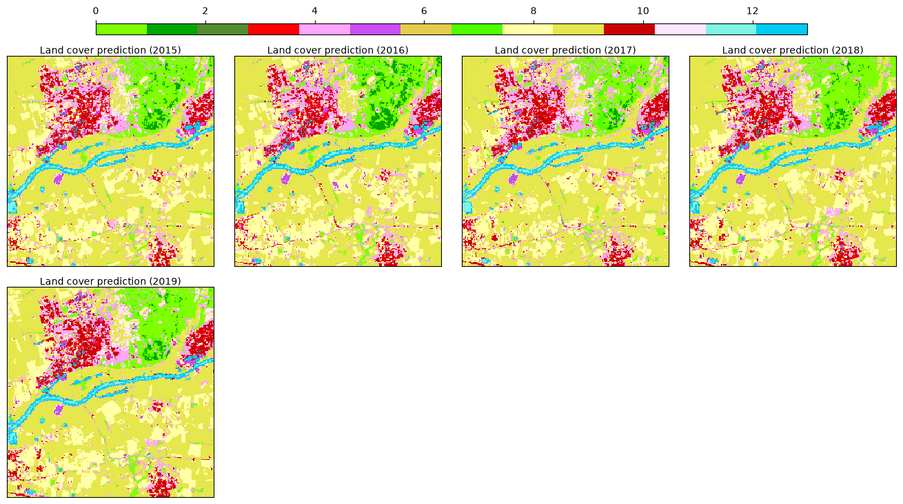

11. Land Cover Mapping (Advanced)#
This tutorial extends the basic land cover mapping workflow with four advanced topics, still using only the bundled toy data:
Probability output — predict class probabilities instead of hard labels.
Feature importance / selection — inspect and prune the covariates.
Ensemble learning — combine several estimators with a
VotingClassifier.Saving / loading — persist the model and reload it with :class:
~skmap.io.process.Prediction.
11.1. Setup#
We reuse the exact same dataset, catalog and space-time overlay from the basic tutorial to build the training table.
[1]:
import os
os.environ["PROJ_LIB"] = "/skmap/lib/python3.12/site-packages/rasterio/proj_data"
os.environ["PROJ_DATA"] = "/skmap/lib/python3.12/site-packages/rasterio/proj_data"
[2]:
import warnings
warnings.filterwarnings("ignore")
from pathlib import Path
import numpy as np
import pandas as pd
from skmap.io import RasterData
from skmap.data import toy
from skmap.overlay import SpaceTimeOverlay
samples = toy.lc_samples()
backend='cpp'
# Load the catalogue from layers.yaml and restrict to the full years 2015-2019.
rdata = (
RasterData.from_yaml(str(toy.LAYERS_YAML), backend=backend, base_path=str(toy.DATA_DIR))
.filter("variant != 'gappy'")
.filter_date("2015-01-01", "2019-12-31", include_non_temporal=True, by_start_date=True)
)
overlay = SpaceTimeOverlay(
points=samples,
col_date="date",
rasterdata=rdata,
date_ranges=[(f"{y}-01-01", f"{y}-12-31") for y in range(2015, 2020)],
raster_tiles=None,
verbose=False,
)
train = overlay.run(max_ram_mb=512, out_file_name=None)
# Year-agnostic seasonal feature names (set by the layers.yaml ``name`` template).
features = [
"ndvi_winter", "ndvi_spring", "ndvi_summer", "ndvi_fall",
"swir1_winter", "swir1_spring", "swir1_summer", "swir1_fall",
"elev", "slope",
]
X = train[features]
X.shape
Dropping 0 points out of 41 because out of extent
Dropping 0 points out of 37 because out of extent
Dropping 0 points out of 40 because out of extent
Dropping 0 points out of 43 because out of extent
Dropping 0 points out of 38 because out of extent
[2]:
(199, 10)
[3]:
from sklearn.preprocessing import LabelEncoder
target_col = 'label'
le = LabelEncoder()
y = le.fit_transform(train[target_col].values)
11.2. Probability output#
A probabilistic classifier returns, for each pixel, a probability distribution over the classes. We train a random forest and evaluate it with the log loss.
[4]:
from sklearn.ensemble import RandomForestClassifier
from sklearn.metrics import log_loss
from sklearn.model_selection import cross_val_predict
clf = RandomForestClassifier(n_estimators=100, random_state=0, n_jobs=-1)
# Out-of-fold probabilities (one row per sample, one column per class)
probs = cross_val_predict(clf, X, y, method="predict_proba", cv=5)
print(f"Out-of-fold log loss: {log_loss(y, probs):.3f}")
Out-of-fold log loss: 1.296
[5]:
clf.fit(X, y)
probs = clf.predict_proba(X)
print("Probability matrix shape:", probs.shape)
print("Classes:", clf.classes_)
Probability matrix shape: (199, 14)
Classes: [ 0 1 2 3 4 5 6 7 8 9 10 11 12 13]
11.3. Feature importance / selection#
Random forests expose per-feature importances. We can use them to understand the model and to drop the least useful covariate.
[6]:
import pandas as pd
importance = pd.Series(clf.feature_importances_, index=features).sort_values(ascending=False)
importance
[6]:
swir1_summer 0.146663
ndvi_spring 0.123759
elev 0.112399
swir1_fall 0.109247
ndvi_summer 0.101852
swir1_spring 0.101066
ndvi_fall 0.090426
ndvi_winter 0.080590
swir1_winter 0.075272
slope 0.058725
dtype: float64
[7]:
from sklearn.feature_selection import SelectFromModel
# Keep only features with importance above the median
selector = SelectFromModel(clf, threshold="median", prefit=True)
X_sel = selector.transform(X)
print("Selected features:", [features[i] for i in selector.get_support(indices=True)])
print("Reduced shape:", X_sel.shape)
Selected features: ['ndvi_spring', 'ndvi_summer', 'swir1_summer', 'swir1_fall', 'elev']
Reduced shape: (199, 5)
11.4. Ensemble learning#
We combine a random forest, a logistic regression and a support vector machine into a soft-voting ensemble.
[8]:
from sklearn.ensemble import VotingClassifier
from sklearn.linear_model import LogisticRegression
from sklearn.model_selection import cross_val_score
from sklearn.svm import SVC
voting = VotingClassifier(
estimators=[
("rf", RandomForestClassifier(n_estimators=100, random_state=0, n_jobs=-1)),
("lr", LogisticRegression(max_iter=1000, random_state=0)),
("svc", SVC(probability=True, random_state=0)),
],
voting="soft",
)
scores = cross_val_score(voting, X, y, cv=5)
print(f"Ensemble cross-validated accuracy: {scores.mean():.3f} +/- {scores.std():.3f}")
Ensemble cross-validated accuracy: 0.694 +/- 0.035
[9]:
voting.fit(X, y)
print(f"Ensemble training accuracy: {voting.score(X, y):.3f}")
Ensemble training accuracy: 0.960
11.5. Saving / loading the model#
The fitted model can be persisted with joblib and reloaded with joblib.load. Spatial prediction is done through :class:~skmap.io.process.Prediction.
[10]:
import joblib
model_path = "landcover_rf.joblib"
joblib.dump(clf, model_path)
model = joblib.load(model_path)
print("Feature names:", list(model.feature_names_in_))
print("Predictions:", model.predict(X.values[:5]))
Feature names: ['ndvi_winter', 'ndvi_spring', 'ndvi_summer', 'ndvi_fall', 'swir1_winter', 'swir1_spring', 'swir1_summer', 'swir1_fall', 'elev', 'slope']
Predictions: [ 9 9 0 0 12]
11.6. Multi-year spatial prediction#
:class:~skmap.io.process.Prediction predicts all years in one model call: the years are concatenated into a single feature matrix with the static covariates repeated for each year. For a probability classifier it appends one probability band per (class, year) and a dominant-class band (argmax) per year, all under the prediction group. drop_input removes the consumed covariates so only the predictions remain.
[11]:
from skmap.io import RasterData
from skmap.io.process import Prediction
rdata = (
RasterData.from_yaml(str(toy.LAYERS_YAML), base_path=str(toy.DATA_DIR), backend=backend)
.filter("variant != 'gappy'")
.filter_date("2015-01-01", "2019-12-31", include_non_temporal=True, by_start_date=True)
.read()
)
# predict_proba -> per-class probabilities + a dominant-class band (argmax).
# drop_input keeps only the prediction bands.
rdata.run(Prediction(model=model, predict_proba=True, valid_only=False,
target_names=le.classes_.astype(str).tolist()),
drop_input=True)
rdata.info
#years = rdata.get_years()
#n_years = len(years)
#n_class = len(le.classes_)
#arr = rdata.array.get()
#proba = arr[: n_class * n_years].reshape(n_class, n_years, -1)
#dominant = arr[n_class * n_years :].reshape(n_years, -1)
#proba.shape, dominant.shape
[11]:
| group | input_path | input_band | start_date | end_date | temporal | name | band | variant | season | year | |
|---|---|---|---|---|---|---|---|---|---|---|---|
| 0 | prediction | /root/scikit-map/skmap/data/toy/ndvi/filled/nd... | 1 | 2015-01-01 | 2015-12-31 | True | prediction_Broad-leaved forest | NaN | NaN | NaN | 2015.0 |
| 1 | prediction | /root/scikit-map/skmap/data/toy/ndvi/filled/nd... | 1 | 2016-01-01 | 2016-12-31 | True | prediction_Broad-leaved forest | NaN | NaN | NaN | 2016.0 |
| 2 | prediction | /root/scikit-map/skmap/data/toy/ndvi/filled/nd... | 1 | 2017-01-01 | 2017-12-31 | True | prediction_Broad-leaved forest | NaN | NaN | NaN | 2017.0 |
| 3 | prediction | /root/scikit-map/skmap/data/toy/ndvi/filled/nd... | 1 | 2018-01-01 | 2018-12-31 | True | prediction_Broad-leaved forest | NaN | NaN | NaN | 2018.0 |
| 4 | prediction | /root/scikit-map/skmap/data/toy/ndvi/filled/nd... | 1 | 2019-01-01 | 2019-12-31 | True | prediction_Broad-leaved forest | NaN | NaN | NaN | 2019.0 |
| ... | ... | ... | ... | ... | ... | ... | ... | ... | ... | ... | ... |
| 70 | prediction | /root/scikit-map/skmap/data/toy/ndvi/filled/nd... | 1 | 2015-01-01 | 2015-12-31 | True | prediction | NaN | NaN | NaN | 2015.0 |
| 71 | prediction | /root/scikit-map/skmap/data/toy/ndvi/filled/nd... | 1 | 2016-01-01 | 2016-12-31 | True | prediction | NaN | NaN | NaN | 2016.0 |
| 72 | prediction | /root/scikit-map/skmap/data/toy/ndvi/filled/nd... | 1 | 2017-01-01 | 2017-12-31 | True | prediction | NaN | NaN | NaN | 2017.0 |
| 73 | prediction | /root/scikit-map/skmap/data/toy/ndvi/filled/nd... | 1 | 2018-01-01 | 2018-12-31 | True | prediction | NaN | NaN | NaN | 2018.0 |
| 74 | prediction | /root/scikit-map/skmap/data/toy/ndvi/filled/nd... | 1 | 2019-01-01 | 2019-12-31 | True | prediction | NaN | NaN | NaN | 2019.0 |
75 rows × 11 columns
[12]:
rdata.info['group'].value_counts()
[12]:
group
prediction 75
Name: count, dtype: int64
[13]:
from matplotlib.colors import ListedColormap
legend = {
'Broad-leaved forest': '#80FF00',
'Coniferous forest': '#00A600',
'Continuous urban fabric': '#558b2f',
'Discontinuous urban fabric': '#FF0000',
'Green urban areas': '#FFA6FF',
'Industrial or commercial units': '#CC4DF2',
'Land principally occupied by agriculture, with significant areas of natural vegetation': '#E6CC4D',
'Mixed forest': '#4DFF00',
'Non-irrigated arable land': '#FFFFA8',
'Pastures': '#E6E64D',
'Road and rail networks and associated land': '#CC0000',
'Sport and leisure facilities': '#FFE6FF',
'Water bodies': '#80F2E6',
'Water courses': '#00CCF2'
}
lc_classes = le.classes_
pixel_values = le.transform(lc_classes)
colors = ListedColormap([ legend[c] for c in le.classes_ ])
print("Mapped land cover classes")
for l, p, c in zip(lc_classes, pixel_values, colors.colors):
print(f' - {l} => pixel value {p} ({c})')
Mapped land cover classes
- Broad-leaved forest => pixel value 0 (#80FF00)
- Coniferous forest => pixel value 1 (#00A600)
- Continuous urban fabric => pixel value 2 (#558b2f)
- Discontinuous urban fabric => pixel value 3 (#FF0000)
- Green urban areas => pixel value 4 (#FFA6FF)
- Industrial or commercial units => pixel value 5 (#CC4DF2)
- Land principally occupied by agriculture, with significant areas of natural vegetation => pixel value 6 (#E6CC4D)
- Mixed forest => pixel value 7 (#4DFF00)
- Non-irrigated arable land => pixel value 8 (#FFFFA8)
- Pastures => pixel value 9 (#E6E64D)
- Road and rail networks and associated land => pixel value 10 (#CC0000)
- Sport and leisure facilities => pixel value 11 (#FFE6FF)
- Water bodies => pixel value 12 (#80F2E6)
- Water courses => pixel value 13 (#00CCF2)
The dominant-class band and plot the dominant class map:
[23]:
cls = 'Pastures'
rdata.filter(f"name == 'prediction'").plot(cmap=colors, img_title_text='Land cover {group} ({year})')
[23]:
